KEPENGURUSAN
2025–2026
Sertifikat Pengurus HMTG "Mahandragra"
Penerbit: HMTG "Mahandragra" Universitas Pertamina
Dokumen ↗
S1 Teknik Geologi
2023 – Sekarang
SM-IAGI UPER (Seksi Mahasiswa Ikatan Ahli Geologi Indonesia Universitas Pertamina)
Mei 2026 - Sekarang
HMTG "Mahandraga" Universitas Pertamina
April 2025 - April 2026
Penguasaan perangkat lunak teknis, keahlian interpersonal, dan kemampuan bahasa.
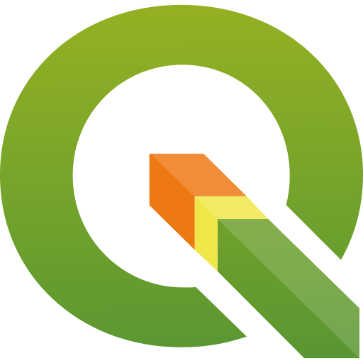
QGISKumpulan sertifikat sebagai bukti keikutsertaan kegiatan.
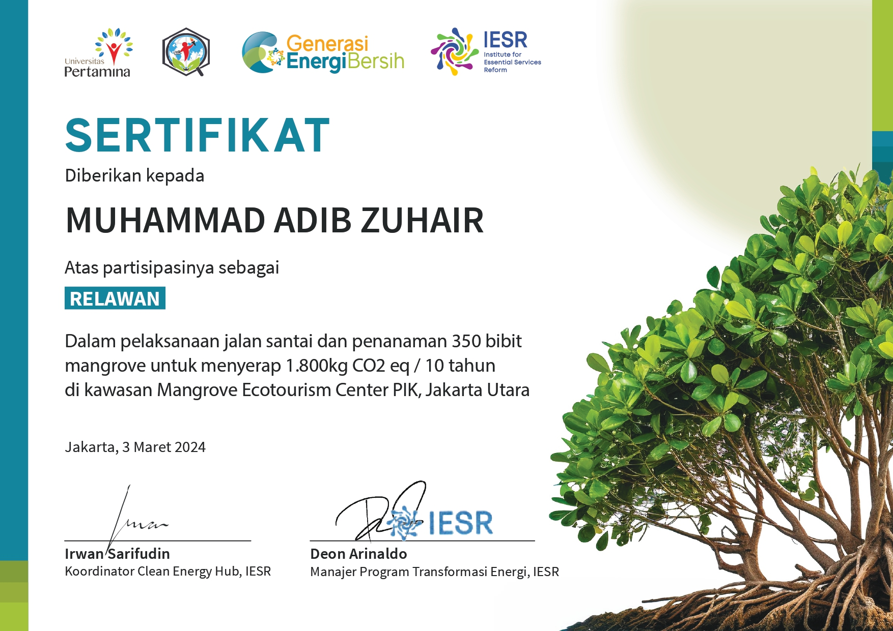
Mahasiswa Teknik Geologi
Petroleum Exploration Enthusiast & AI Enthusiast.
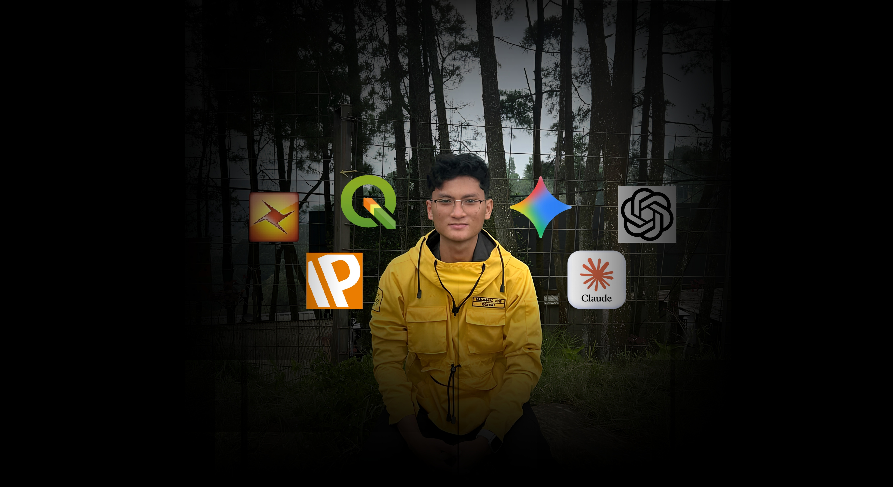
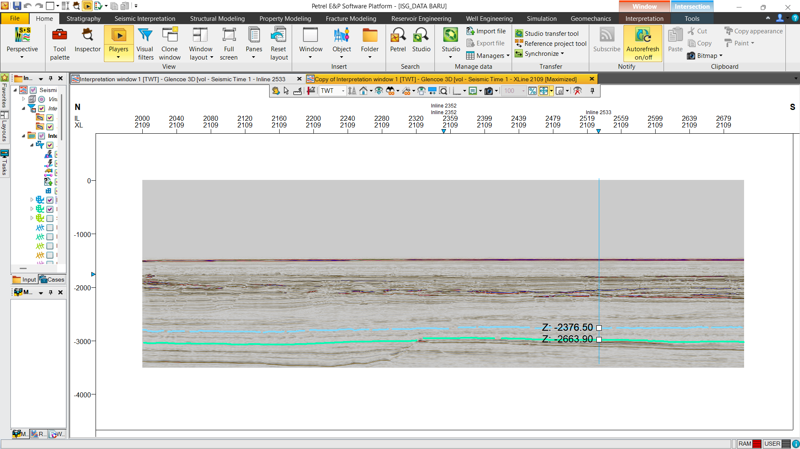
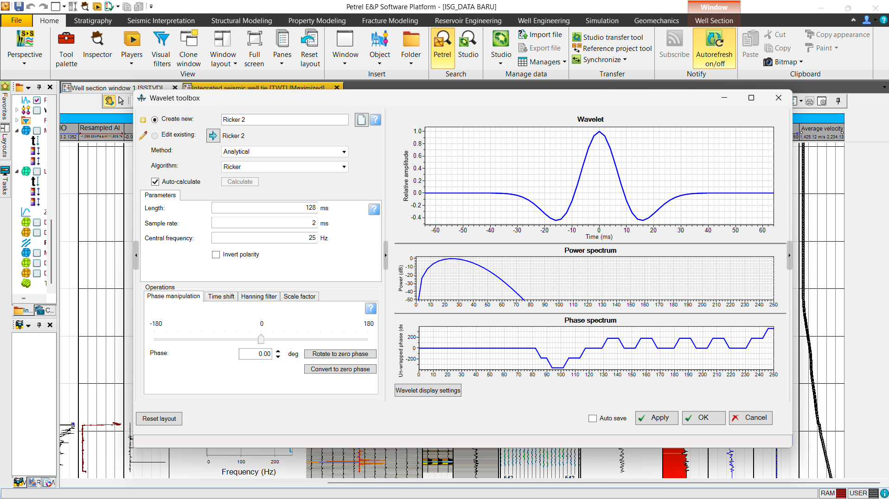
Proyek ini berfokus pada interpretasi data seismik 3D dan analisis sumur Glencoe-1 untuk memetakan struktur bawah permukaan serta mengidentifikasi potensi lead hidrokarbon di area Glencoe, Exmouth Plateau, Cekungan Carnarvon Utara, Australia. Integrasi data mencakup pemanfaatan well log serta data checkshot dan profil kecepatan. Alur kerja meliputi proses well-to-seismic tie, interpretasi sesar, serta pemetaan horizon Muderong dan Lower Barrow Group dalam domain waktu (TWT) dan kedalaman (Depth).
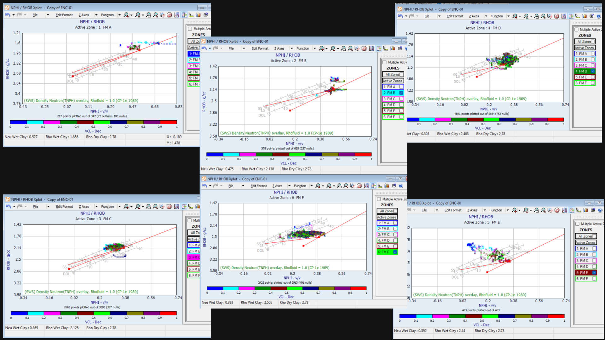
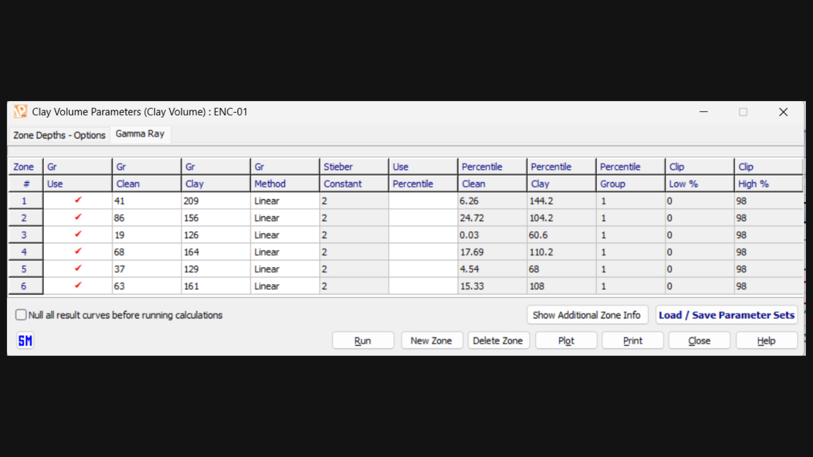
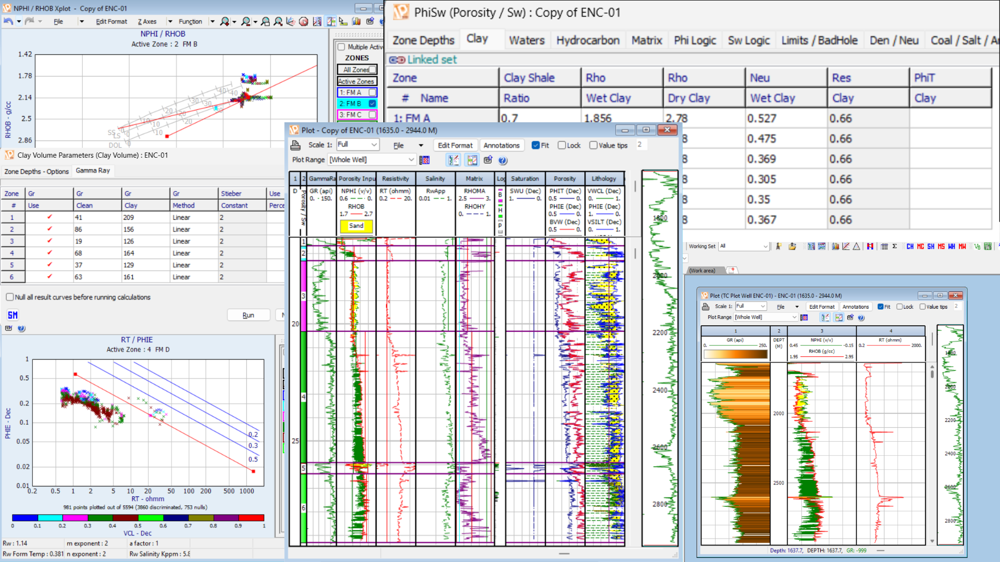
Integrasi analisis log kuantitatif pada sumur Glencoe-1 menggunakan Interactive Petrophysics (IP) untuk evaluasi karakteristik reservoir bawah permukaan. Proyek ini mencakup alur kerja lengkap evaluasi formasi, mulai dari quality control data raw log, parameterisasi clay volume (Vcl), penentuan resistivitas air formasi (Rw) via Pickett Plot, kalkulasi porositas efektif (Phie) dan saturasi air (Sw), hingga penentuan interval Net Pay berbasis analisis cutoff.
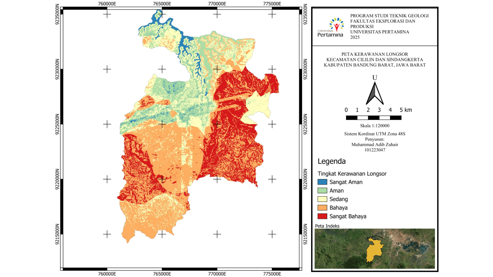
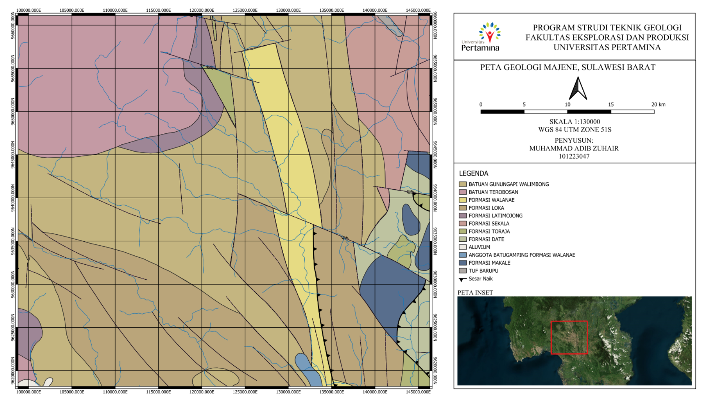
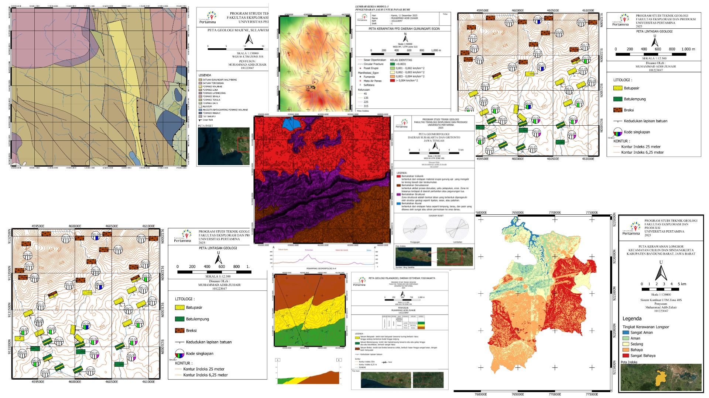
Integrasi pemetaan geologi digital, analisis geomorfologi, evaluasi kerawanan bencana, dan ekstraksi kelurusan struktur (FFD) berbasis sistem informasi geografis menggunakan Software QGIS.
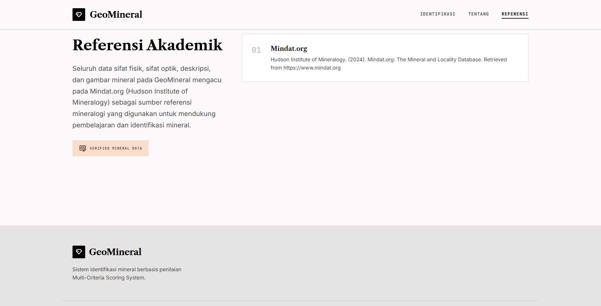
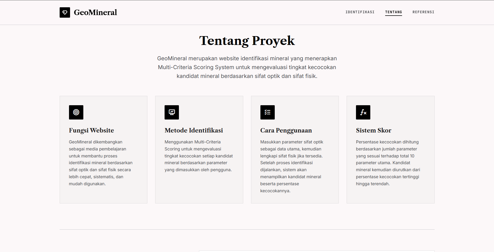
Platform web interaktif untuk identifikasi mineral yang dikembangkan dengan bantuan AI (AI-assisted development). Proyek ini mentransformasi 51 data katalog tugas kuliah Mineralogi menjadi sistem digital interaktif berbasis Multi-Criteria Scoring (10 parameter sifat fisik & optik), dengan validasi data mengacu pada Mindat.org.
S1 Teknik Geologi
2023 – Sekarang
SM-IAGI UPER (Seksi Mahasiswa Ikatan Ahli Geologi Indonesia Universitas Pertamina)
Mei 2026 - Sekarang
HMTG "Mahandraga" Universitas Pertamina
April 2025 - April 2026
Penguasaan perangkat lunak teknis, keahlian interpersonal, dan kemampuan bahasa.
Kumpulan sertifikat sebagai bukti keikutsertaan kegiatan.
Mahasiswa Teknik Geologi
Petroleum Exploration Enthusiast & AI Enthusiast.
Proyek ini berfokus pada interpretasi data seismik 3D dan analisis sumur Glencoe-1 untuk memetakan struktur bawah permukaan serta mengidentifikasi potensi lead hidrokarbon di area Glencoe, Exmouth Plateau, Cekungan Carnarvon Utara, Australia. Integrasi data mencakup pemanfaatan well log serta data checkshot dan profil kecepatan. Alur kerja meliputi proses well-to-seismic tie, interpretasi sesar, serta pemetaan horizon Muderong dan Lower Barrow Group dalam domain waktu (TWT) dan kedalaman (Depth).
Integrasi analisis log kuantitatif pada sumur Glencoe-1 menggunakan Interactive Petrophysics (IP) untuk evaluasi karakteristik reservoir bawah permukaan. Proyek ini mencakup alur kerja lengkap evaluasi formasi, mulai dari quality control data raw log, parameterisasi clay volume (Vcl), penentuan resistivitas air formasi (Rw) via Pickett Plot, kalkulasi porositas efektif (Phie) dan saturasi air (Sw), hingga penentuan interval Net Pay berbasis analisis cutoff.
Integrasi pemetaan geologi digital, analisis geomorfologi, evaluasi kerawanan bencana, dan ekstraksi kelurusan struktur (FFD) berbasis sistem informasi geografis menggunakan Software QGIS.
Platform web interaktif untuk identifikasi mineral yang dikembangkan dengan bantuan AI (AI-assisted development). Proyek ini mentransformasi 51 data katalog tugas kuliah Mineralogi menjadi sistem digital interaktif berbasis Multi-Criteria Scoring (10 parameter sifat fisik & optik), dengan validasi data mengacu pada Mindat.org.